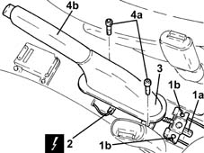

3380A10 handbrake lever - r+r
- Path
- Procedures > 33 BRAKING SYSTEM > 3380 HANDBRAKE > 3380A handbrake control and linkage > 3380A10 handbrake lever - r+r
- Kind
- repair procedure (removal / refitting; the operation number is the code)
- Applies to
- all engines; all production periods
- Interactive page
- https://sloeber94.github.io/elrnDB-lYpsln/en/#/2429209
Applies to: all engines; all production periods
 Removing
Removing
 Refitting
RefittingEnsure that the ignition key is in OFF position, then disconnect the battery negative terminal (-).
 | Name | Connector |
|---|---|---|
- | Battery |
Proceed with removal 7040L22 REAR TRIM on TUNNEL -R.R. .
Proceed with removal 7040L28 tunnel switch panel - r r .
Proceed with removal 7040L20 tunnel trim - r r .
1. Loosen adjustment nut (1a), then disconnect cables (1b) from the mount.
2. Disconnect the electrical connection from the handbrake 'on' warning light switch.
| Name | Connector |
|---|---|---|
2 | Handbrake switch |
3. Raise the handbrake gaiter as far as necessary.
4. Undo the bolts (4a) and remove the handbrake lever (4b).

Applies to: all engines; all production periods
Refitting
RemovingFit the handbrake lever and tighten the bolts to the specified torque.
 | Fastening | Component | Ø | Value (daNm) |
|---|---|---|---|---|
- | Bolt | HANDBRAKE LEVER | M8 | (Bodyshell side ) 2.4 ÷ 3.0 |
Connect the electrical connection to the handbrake 'on' warning light switch.
Connect the cables to the mount.
Proceed with refitting 3380A04 handbrake - check travel .
Proceed with refitting 7040L20 tunnel trim - r r .
Proceed with refitting 7040L28 tunnel switch panel - r r .
Proceed with refitting 7040L22 REAR TRIM on TUNNEL -R.R. .
Connect the negative (-) battery terminal.
Topics linked from this page (6)
- 3380A04 handbrake - check travel
- 7040L20 tunnel trim - r r
- 7040L22 REAR TRIM on TUNNEL -R.R.
- 7040L28 tunnel switch panel - r r
- A1B Battery ( BATTERY NEGATIVE )
- I40 Handbrake switch ( REAR )